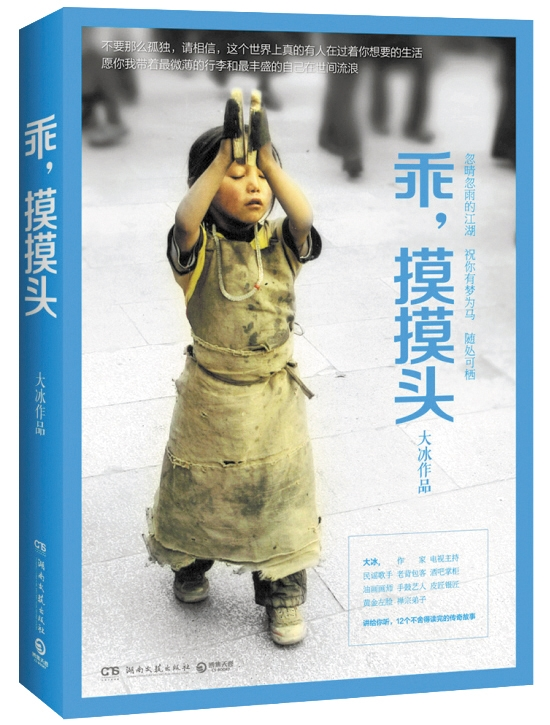

| 书名 | 乖，摸摸头 |
| 作者 | 大冰 |
| 类别 | 青春文学 |
| 标签 | 背包客的江湖故事 |
| 页数 | 336 |
| 字数 | 306千字 |
| 出版社 | 湖南文艺出版社 |
| 出版时间 | 2014/10/1 |
作品简介
《乖，摸摸头》会让你触碰那些你或许永远都不会去体会的生活，认识那些你或许永远都无法结交的人。就像大冰说的那样：不要那么孤独，请相信， 这个世界上真的有人在过着你想要的生活，愿你我带着最微薄的行李和最丰盛的自己在世间流浪，忽晴忽雨的江湖，祝你有梦为马，随处可栖。
目 录
- 【乖，摸摸头】--“杂草敏”的故事
- 【我有一碗酒，可以慰风尘】--一个比酒还烈的故事
- 【对不起】--她和被主人遗弃的松狮狗的故事。
- 【普通朋友】--屌丝男士-大鹏曾差一点儿被砸死在舞台上的拼搏故事
- 【不许哭】--藏地往事，酒吧掌柜大冰、日语翻译妮可、民谣歌手赵雷的拉萨旧时光。
- 【唱歌人不许掉眼泪】--一个从缅甸金三角走来的流浪歌手的故事
- 【听歌人不许掉眼泪】--小屋存在的最遥远的理由，以及大树和兜兜凄美的爱情故事。
- 【一个叫木头，一个叫马尾】--毛毛叛逆的青春、艰辛的奋斗和与木头的爱情史。
- 【椰子姑娘流浪记】--一段长达13年的爱情，一个普通人的传奇
- 【风马少年】--大冰、二宝、成子的纳木措惊险之旅，离死亡仅差60厘米
- 【小因果】--这个9岁的小男孩不会知道，24年后，身旁的这个小姑娘会成为他的妻子，陪他浪迹天涯。
- 【我的师弟不是人】--我的师弟昌宝不是人，是一只哈奇士。
作者简介
大冰，1980年生人、作家、山东卫视首席主持人、某高校导师、民谣歌手、老背包客、不敬业的酒吧掌柜、油画科班、手鼓艺人、业余皮匠、业余银匠、业余诗人、资深西藏拉漂、资深丽江混混、黄金左脸、禅宗临济弟子。